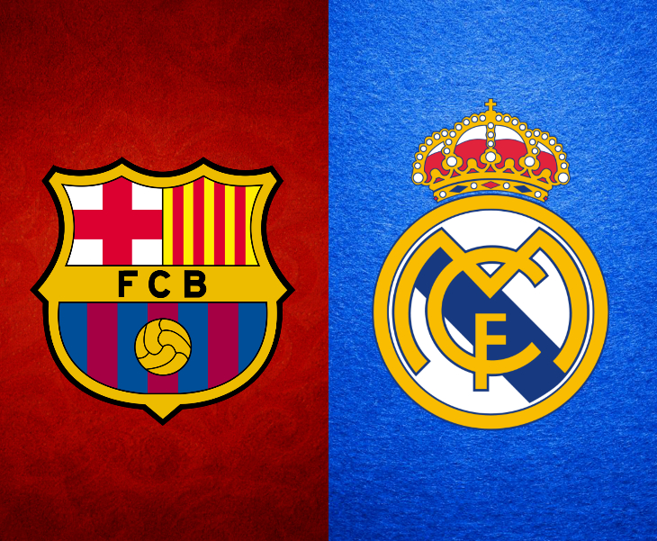

Абсолютные рекорды премии France Football

За всю историю вручения «Золотого мяча» в клубном зачете развернулась настоящая гонка двух испанских гигантов — мадридского «Реала» и каталонской «Барселоны». Футболисты обоих клубов завоевали по двенадцать трофеев, значительно опережая туринский «Ювентус» и «Милан» (по восемь наград), а также мюнхенскую «Баварию» (пять наград). В национальном зачете по числу побед лидируют Аргентина, Франция, Германия, Нидерланды и Португалия.
Особое место в истории занимают возрастные рекорды. Самым молодым обладателем приза остается бразилец Роналдо, получивший награду в декабре 1997 года в возрасте 21 года и 3 месяцев. Самым возрастным лауреатом по-прежнему является первый победитель 1956 года англичанин Стэнли Мэтьюз, которому на момент триумфа исполнился 41 год и 10 месяцев.
Перейти к учебным заданиям и курсовой работе
Все лабораторные работы семестра оформлены в едином стиле сайта с сохранением шапки, меню и подвала.
ОТКРЫТЬ РАЗДЕЛ ЗАДАНИЙ